Overview
This guide explains how to deploy a Kali Linux virtual machine on VirtualBox hypervisor.
What You Will Learn
- Create a dedicated VirtualBox VM storage folder (optional: can use default folder)
- Download the Kali Linux VirtualBox image
- Extract the virtual machine package
- Configure VirtualBox default storage location
- Import and start Kali Linux
Step 1 — Create VM Storage Folder
- Open File Explorer.
- Navigate to Drive D (or preferred storage drive).
- Create a folder named virtualbox-VMs.
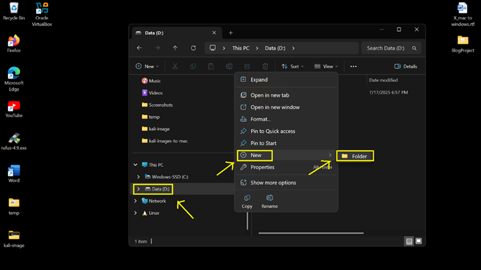
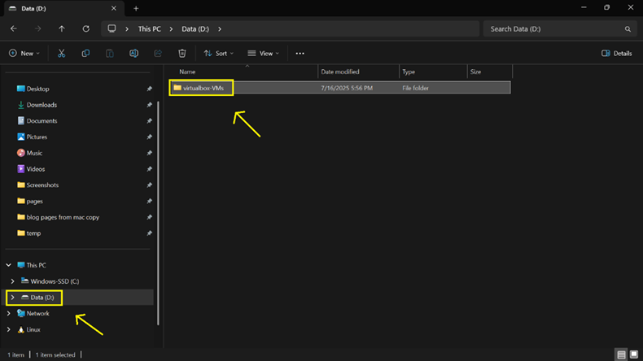
Step 2 — Download Kali Linux Virtual Machine
- Navigate to the Kali Linux download page.
- Select Virtual Machines.
- Download the VirtualBox image package.
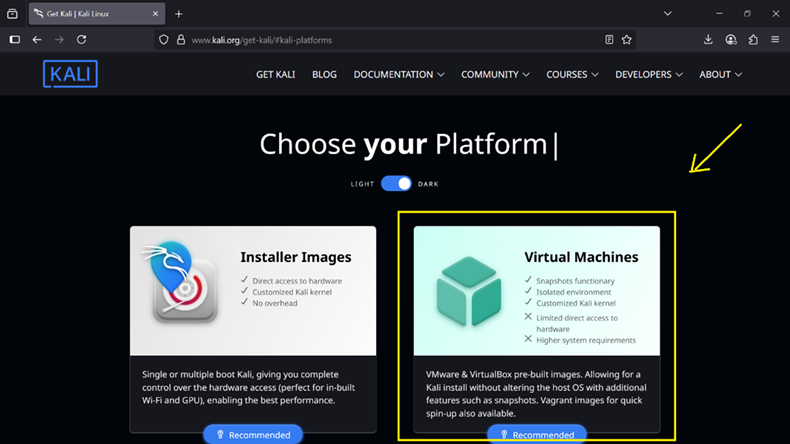
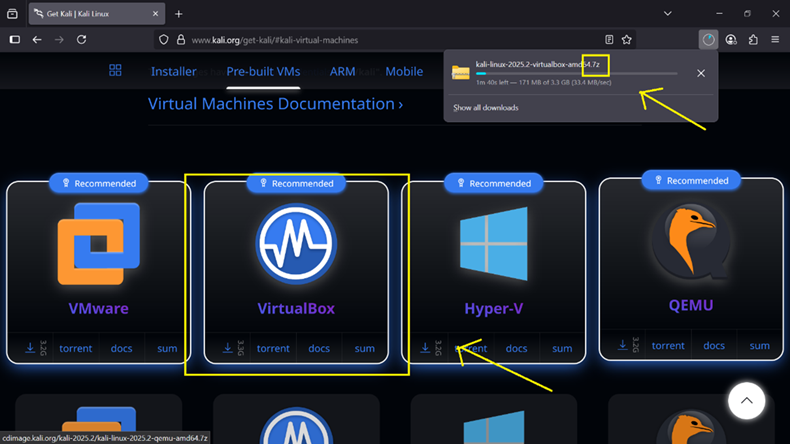
Step 3 — Install 7-Zip
- Download 7-Zip.
- Install the 64-bit version.
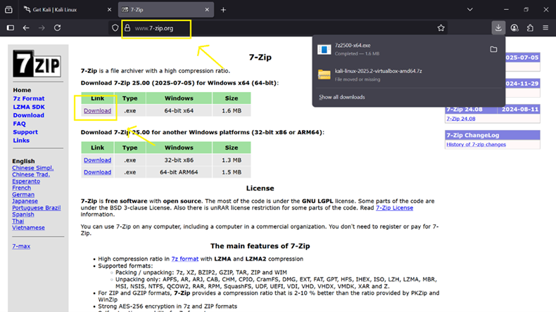
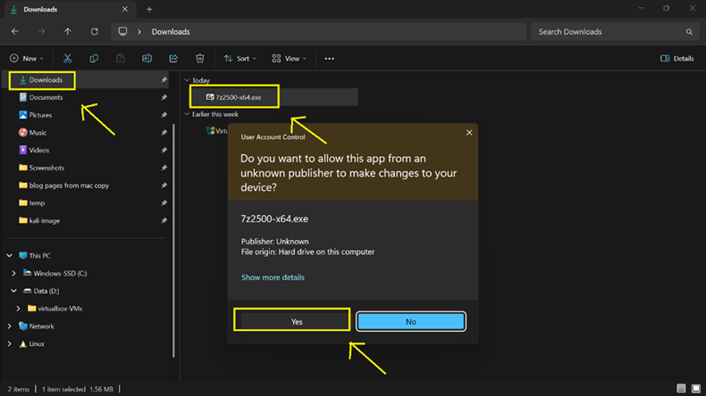
Step 4 — Extract Kali Linux Image
- Navigate to the VM storage folder.
- Right-click the downloaded .7z file.
- Select Extract Here.
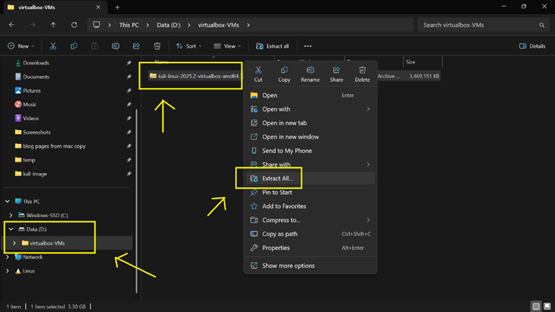
Step 5 — Configure Default VM Folder
- Open VirtualBox.
- Select File → Preferences.
- Set Default Machine Folder to your VM storage directory.
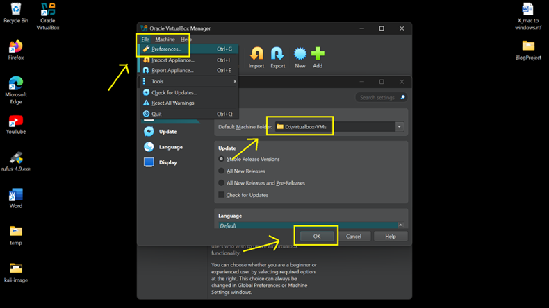
Step 6 — Import Kali Linux VM
- Select Machine → Add.
- Browse to the extracted Kali folder.
- Select the .vbox file.
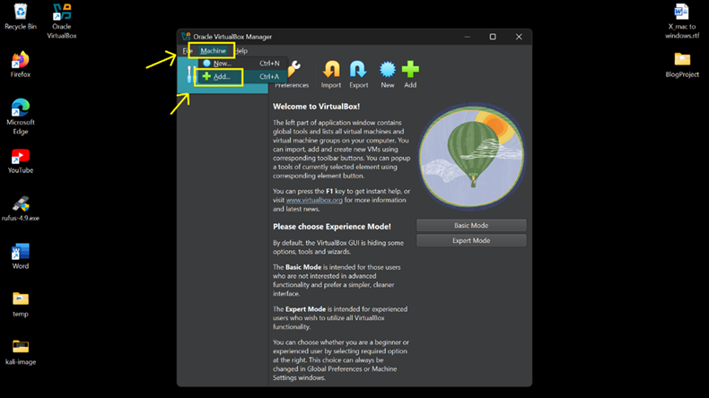
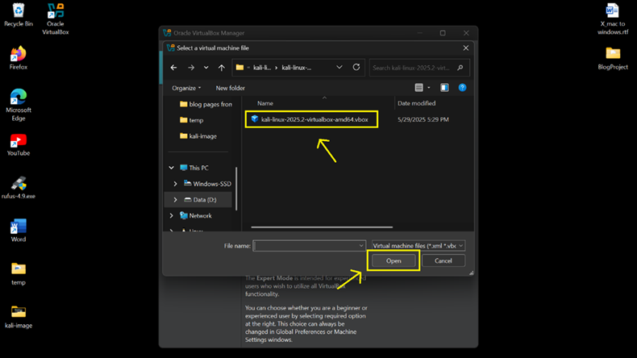
Step 7 — Start Kali Linux
- Select the Kali Linux VM.
- Click Start.
- Wait for the operating system to boot.
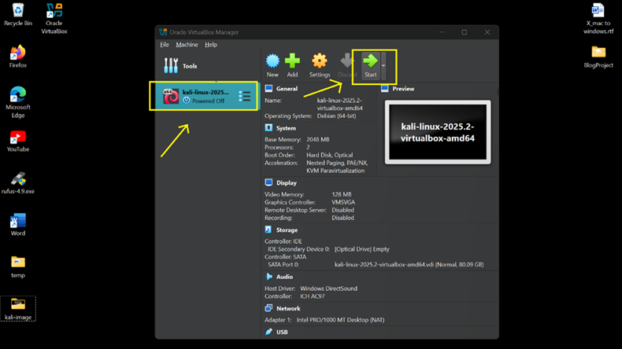
Default Login Credentials
- Username: kali
- Password: kali
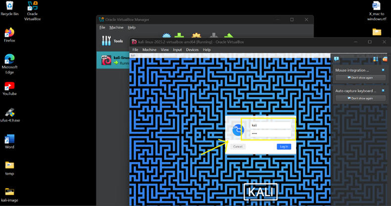
Install Complete
Kali Linux is now operational within VirtualBox ready for network adapter configuration later.